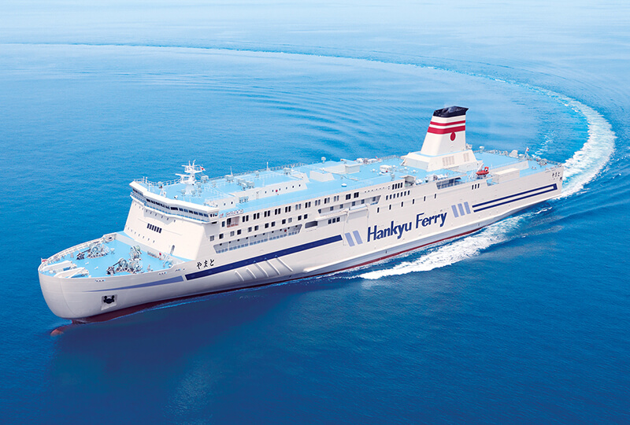
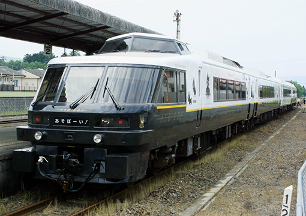
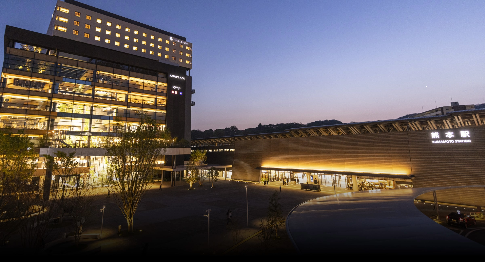
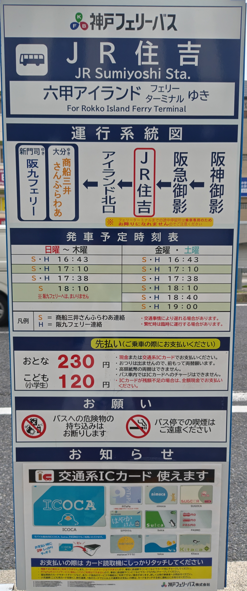
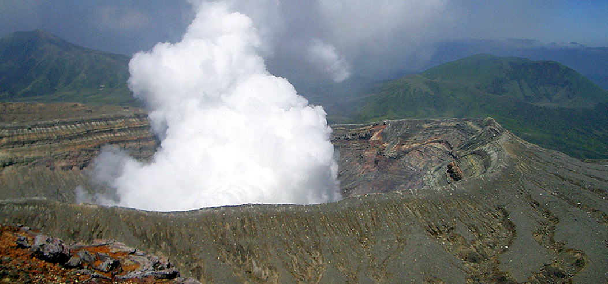

福岡・熊本 2026
この旅について
神戸から阪九フェリーで新門司へ渡り、福岡で吹奏楽演奏会を鑑賞。熊本市内と阿蘇を訪ねる計画。旅行前の予定ページにつき、候補・未確定の内容は実績扱いの対象外。
予約済みの交通・宿泊と、候補・未確定の行程を区別して掲載。旅行後に実際の行程、写真、食事、感想を追加予定。
天気予報
旅程の概要
| 日程 | 予定 | 状況 |
|---|---|---|
| 10/3（土）夜 | 神戸・六甲アイランドから阪九フェリー「やまと」で新門司へ | 予約済み |
| 10/4（日） | 新門司 → 福岡、吹奏楽演奏会鑑賞、博多から熊本へ | 一部予約済み |
| 10/5（月） | 阿蘇観光、熊本市内へ戻る | 候補を検討中 |
| 10/6（火） | 熊本市内観光、熊本から関西へ帰宅 | 帰路は未確定 |
予約済み

⛴️ 阪九フェリー「やまと」
10/3 神戸・六甲アイランド 20:00発、10/4 新門司 8:30到着予定。デラックスシングル、インターネット割引適用。
🚅 九州新幹線 さくら411号
10/4 博多 17:36発 → 熊本 18:14着。演奏会後の熊本移動。

🚃 特急 あそぼーい！
10/5 熊本 9:57発 → 阿蘇 11:22着、阿蘇 15:56発 → 熊本 17:08着。
ホテル日航熊本
10/4〜10/5、禁煙クイーン（21㎡）、朝食付き。

THE BLOSSOM KUMAMOTO
10/5〜10/6、禁煙モデレートダブル、シャワーブースタイプ、朝食付き。到着予定 19:00。
Day 1｜10/3（土） 神戸から新門司へ

阪九フェリー連絡バス
18:10 阪九フェリー連絡バス乗車予定
18:32 阪九フェリー神戸乗り場到着予定
19:00 阪九フェリー船内レストラン開店。乗船後に夕食を取る案。
20:00 神戸・六甲アイランドから阪九フェリー「やまと」出発［予約済み］
船内 船内泊。実際の食事・乗船記は旅行後に追記予定。
Day 2｜10/4（日） 新門司・福岡・熊本
08:30 新門司港 到着予定
午前 阪九フェリー連絡バスで小倉方面へ移動。小倉〜博多はEX予約の自由席を利用［予約済み］
昼 博多での昼食後、サンレイクかすやへの移動予定
14:00 演奏会、サンレイクかすや［確定］
17:36 博多発・九州新幹線「さくら411号」で熊本へ［予約済み］
18:14 熊本着
夜 ホテル日航熊本へチェックイン［予約済み］。熊本市中心部の散策は候補。
Day 3｜10/5（月） 阿蘇観光
今回の熊本旅行の主な観光日。阿蘇は1988年の修学旅行以来、約38年ぶり。

優先度の高い候補
- 草千里
- 阿蘇火山博物館
- 阿蘇周辺での昼食
- 阿蘇の景色を楽しむ
条件付き・時間次第の候補
- 大観峰（時間に余裕があれば）
- 火口（当日の火山活動・規制状況次第）
移動
熊本・阿蘇間は特急「あそぼーい！」往復予約済み。阿蘇駅から草千里方面はバス利用予定。
09:57 熊本発・特急「あそぼーい！1号」［予約済み］
11:22 阿蘇着
11:50 阿蘇駅前発・産交バス阿蘇登山線、草千里方面行き
12:16 草千里・阿蘇火山博物館前着、昼食・観光
14:30 草千里・阿蘇火山博物館前発・産交バス、阿蘇駅前へ（14:58着予定）
15:56 阿蘇発・特急「あそぼーい！4号」［予約済み］
17:08 熊本着
雨天時 早めの切り上げ時は、草千里12:45・13:20・13:55発で阿蘇駅へ戻る案
夜 阿蘇から熊本市へ戻り、THE BLOSSOM KUMAMOTOへ。到着予定 19:00
夜 余力次第で熊本市内へ。疲労時はホテル滞在。
Day 4｜10/6（火） 熊本市内観光・帰宅
午前から午後は熊本市内観光。帰路の時間に合わせ、全候補を回らない前提での調整。
市内観光の候補
- 熊本城
- 上通
- 下通
- 水前寺成趣園
熊本から関西への帰路
飛行機または新幹線を検討中。飛行機は熊本空港から伊丹空港を中心に、JAL・ANA便を比較。
帰路の検討メモ
| 手段 | 確認した内容 | 状況 |
|---|---|---|
| 飛行機 | 熊本空港 → 伊丹空港。JAL 15:35発・19:05発を確認。ANA便も比較対象。 | 未確定 |
| 飛行機の参考価格 | 計画初期に15:35便 12,320円、19:05便 11,880円を確認。その後19:05便は18,040円まで上昇。 | 参考情報 |
| 新幹線 | 熊本から関西まで約18,960円を確認。 | 比較中 |
地図
交通・宿泊
阪九フェリー 神戸乗り場
阪九フェリー 新門司港 神戸行きターミナル
熊本駅
ホテル日航熊本
THE BLOSSOM KUMAMOTO
熊本市内・阿蘇の候補
熊本城
草千里
ニュー草千里
道の駅 阿蘇
阿蘇火山博物館
阿蘇中岳 第1火口
旅のメモ
食べたいもの候補
熊本市内で食べたいもの
- 馬刺し
- からし蓮根
- ひともじのぐるぐる
- 太平燕
- 熊本ラーメン
阿蘇で食べたいもの
- あか牛丼
- だご汁
おやつ・お土産
- いきなり団子
お土産候補
自宅用
- いきなり団子（長寿庵）
- 阿蘇のあか牛肉めし・阿蘇高菜
- 熊本ラーメン
- 透明醤油（フンドーダイ）
- 球磨焼酎
配りやすいもの
- 誉の陣太鼓
- 武者がえし
- 阿蘇ジャージー牛乳系のクッキー・ドーナツ
- 風雅巻き
購入場所の候補
道の駅 阿蘇、熊本駅、熊本空港。いきなり団子は長寿庵での購入候補。
飲食店候補
10/4・10/5 夜｜熊本市内
馬か家 んま
10/4・10/5 夜｜熊本市内
まるた庵
10/4・10/5 夜｜熊本市内
熊本郷土料理居酒屋 上乃裏とおり まぅいどっ
10/6 昼｜熊本市内
紅蘭亭
帰路前｜熊本駅
長寿庵（いきなり団子）
Google Maps
「熊本2026」リスト作成済み。観光地、繁華街、飲食店などの候補を保存。
今回見送る場所
天草は日程に十分な時間を確保できないため、今回は見送り。将来の熊本旅行候補。